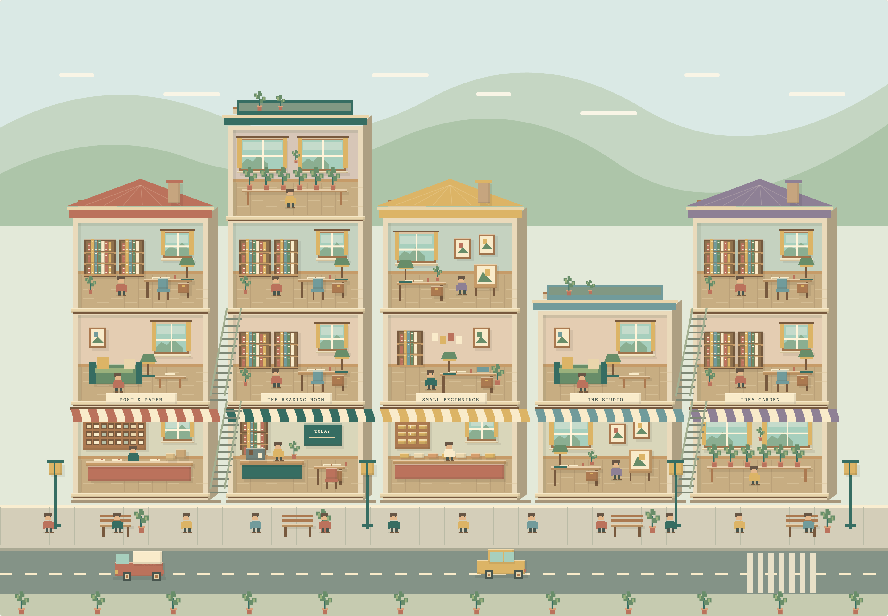

✉
Render research / original code study
A small town,
cut open.
A side-on construction system for Hamlet: calm blocks, a readable street, and just enough life to suggest that the day is moving.

▤
☀
Phone-scale test
Three buildings, three people, one road. Read the function by silhouette before you can read a label.
Eight construction rules
- Orthographic side elevation; barely reveal roofs.
- Use a 2px detail grid, 218px parcels and 150px floors.
- Preserve five broad value bands.
- One room carries one obvious verb.
- Feet sit on one pavement baseline.
- Spend saturation as navigation.
- Repeat structure, vary the ornaments.
- Use icon signs; keep words outside.
Public references
- Mega Mall Story — App StoreOfficial listing and public screenshots; useful for stacked-room scanning.
- Mega Mall Story 2 — Google PlayOfficial listing and public screenshots; useful for route and movement hierarchy.
- Kairo ParkOfficial developer provenance for the genre reference.
Local companion: research.json records observations, source boundaries, palette and pitfalls. The historical local mockup was inspected only to retain Hamlet's gentle-growth intent.
Failure checks
If the scene is shrinking to a phone:
- Can you name every building from its sign or primary prop?
- Can you count the people without mistaking them for decoration?
- Is the road a route, not half the screen?
- Does grayscale still separate sky, building, pavement and road?